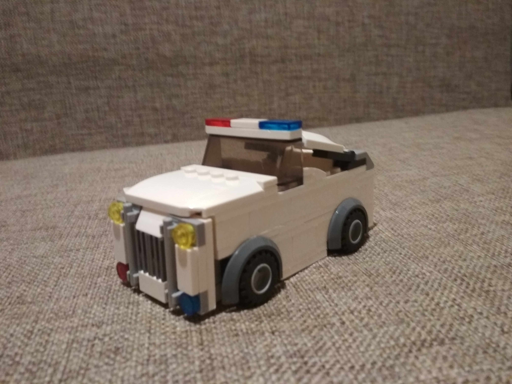
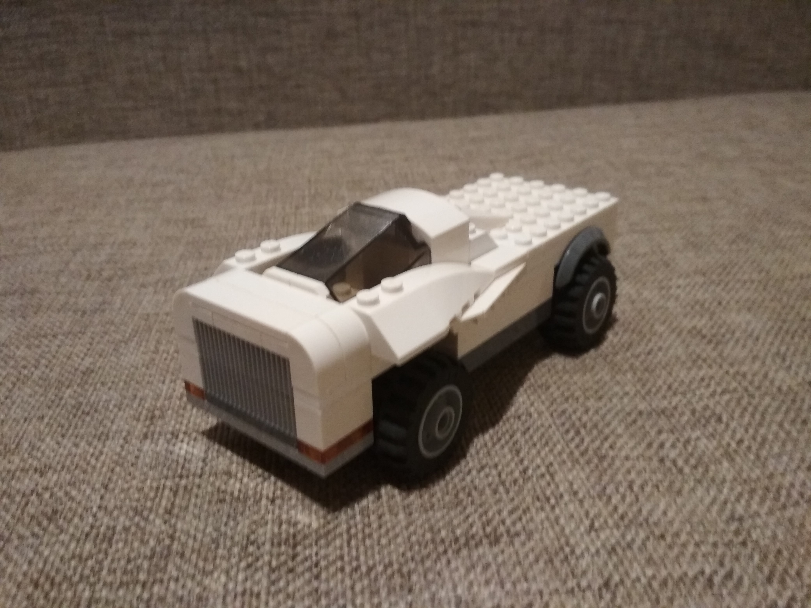
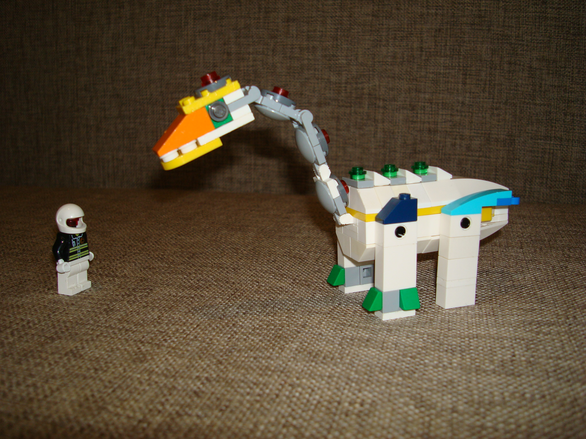
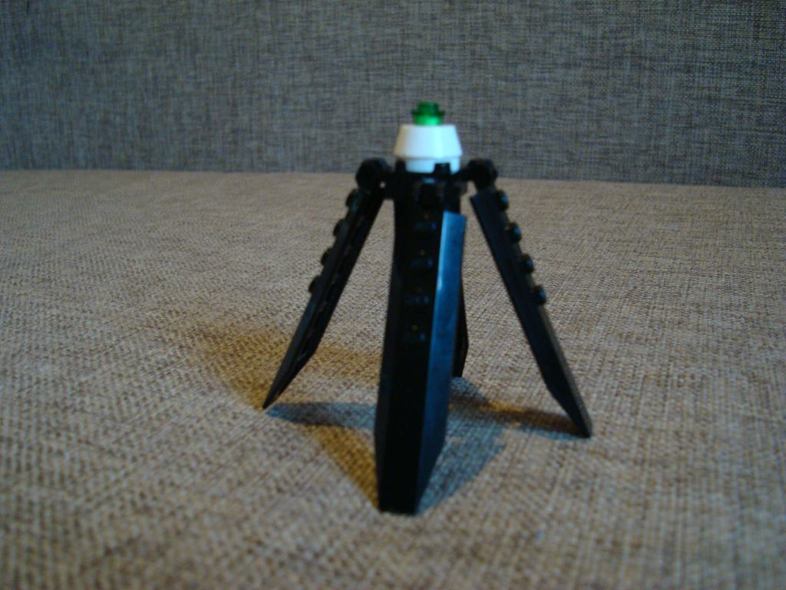
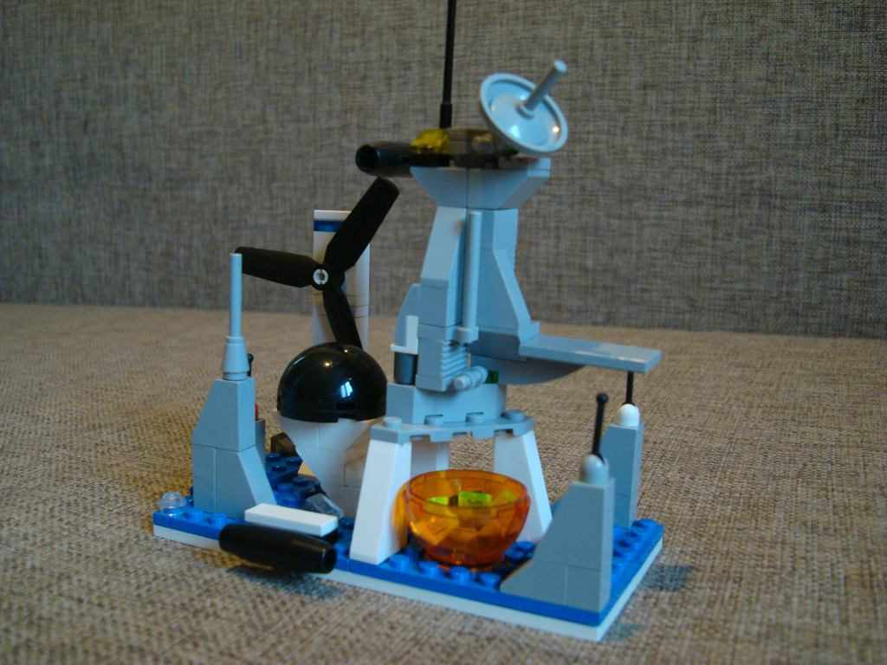
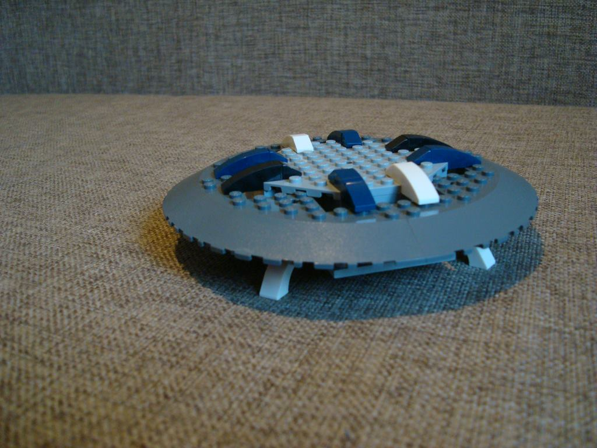
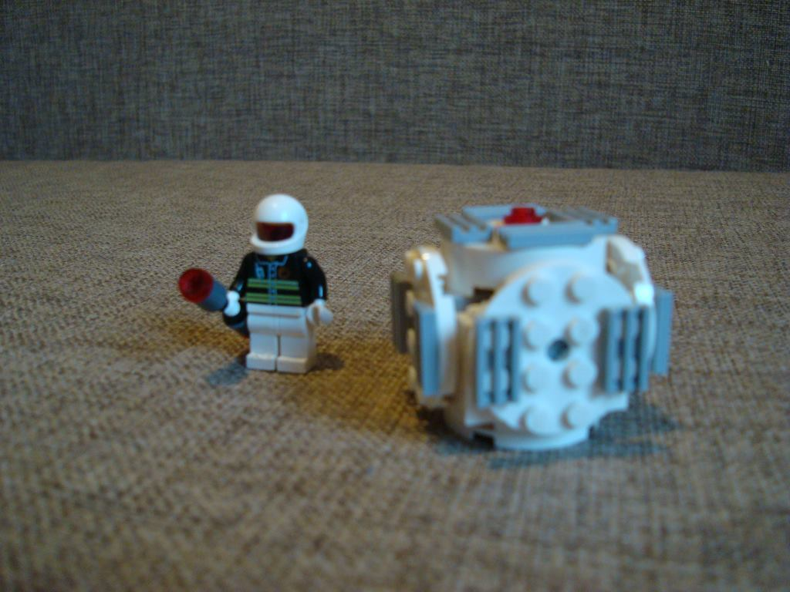
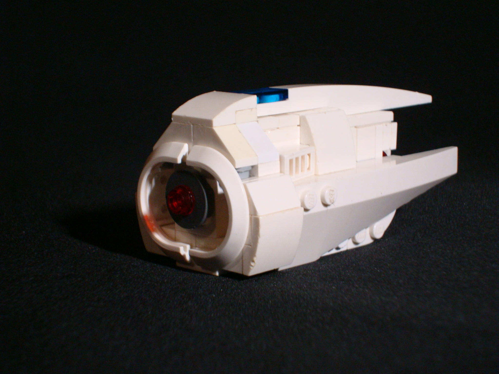

Lego News
Август, 2021


Робоулитка Мося.


Дракоша (член семьи)


Механический экскаватор
Февраль, 2021
Полицейский гипер-мобиль.
Космовездеход марки GL-42.
Декабрь, 2020

Инопланетный звездолёт.

Космоцикл для исследований Марса.

Космовездеход "Dracan"

Космический дрон для коротких перелётов по планете.

Рейдер-истребитель Зейна.

Космический лифт для доставки людей и грузов со звездолёта на планету и обратно.
Октябрь, 2020
Привет легозавр! Давай дружить!
Обнаружен неопознанный космический объект. Распознать. Объект не опознан...
Внимание! К космической станции "Симара-1" приближается огромный метеорит! Включить защитное поле!

Три, два, один, огонь! Истребитель Рода Гиллиэса "Boost-35" самый быстрый в нашей галактике.
Мы прилетели из соседней галактики, чтобы всё здесь починить.
Космический лифт для доставки людей и грузов на космическую станцию.
Мы прилетели из дальнего уголка Вселенной! Космический корабль Джона Хетта "Покоритель Вселенной" оборудован мощными двигателями, которые позволяют ему летать по всей Вселенной, и радаром, который всё распознаёт на 1000548 километров.

Полицейский рейдер с двумя гипердрайвами и скрытыми стабилизаторами.

Гоночный звездолёт "Стрела" умеет делать любые полётные трюки.